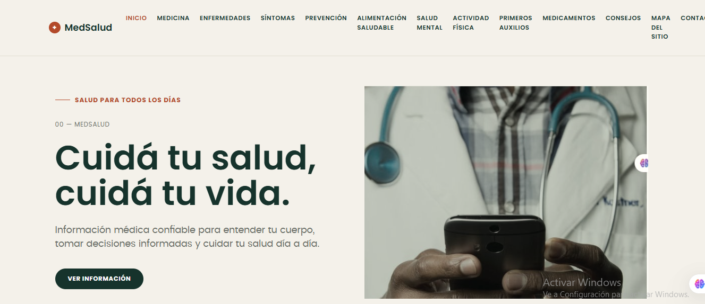
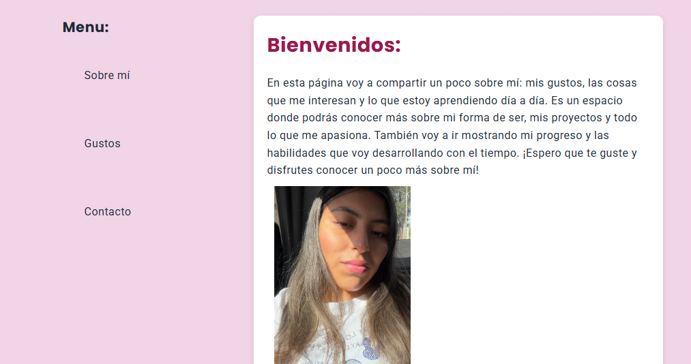

Proyectos
MaderaPro (Proyecto Promadera)
Plataforma que conecta a armadores de muebles con proveedores de insumos, con una API de productos y base de datos.
Mi rol: backend principal en un equipo de 3 personas.
Tecnologías: Python, API, base de datos, Git y GitHub.
Repositorio
Demo

MedSalud
Sitio de información médica de 12 secciones, con buscador en vivo, CRUD de artículos, registro y login con roles.
Mi rol: desarrollo completo (frontend, backend y base de datos).
Tecnologías: PHP, MySQL, PostgreSQL, JavaScript, MVC, Laravel y Docker.
Repositorio
Demo
Prime Ventas
Tienda tecnológica con 7 componentes reutilizables, filtros por categoría y stock, y formulario con vista previa en vivo.
Mi rol: desarrollo completo del frontend.
Tecnologías: React 19, Vite y CSS responsive.
Repositorio
Demo

JS Mini Apps
Tres aplicaciones: catálogo de 12 productos con filtros combinados, lista de tareas y buscador de usuarios que consume una API pública.
Mi rol: desarrollo completo.
Tecnologías: HTML5, CSS3, JavaScript ES6+ y Fetch API.
Repositorio
Demo

Sitio web personal
Mi primer sitio, con HTML5 semántico, Flexbox, Grid y formulario de contacto, probado en tres tamaños de pantalla.
Mi rol: diseño y desarrollo completo.
Tecnologías: HTML5, CSS3 y diseño responsive.
Repositorio
Demo